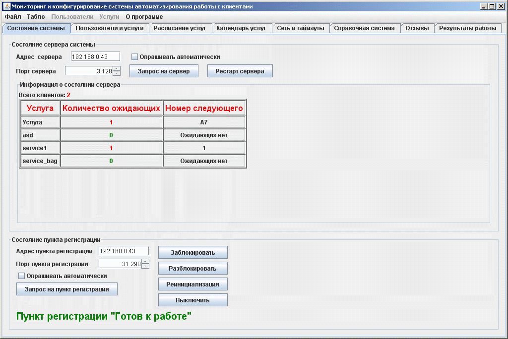
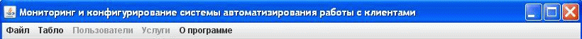
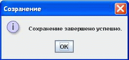
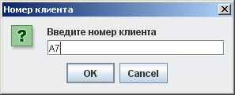
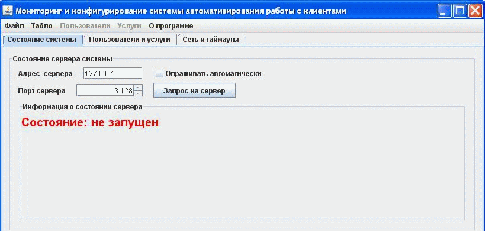
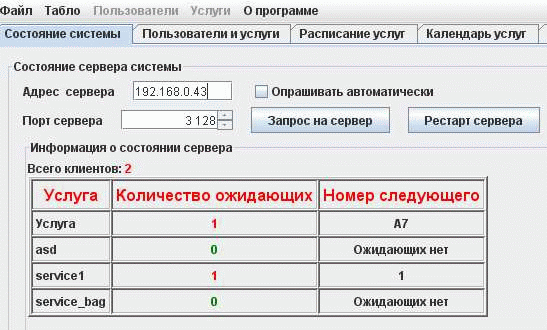
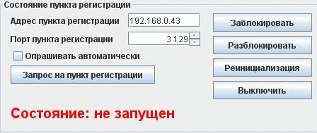
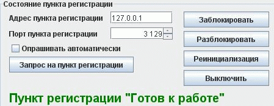

Мониторинг системы

Главное меню
В главном меню окна конфигурирования и мониторинга системы находятся 4 пункта:
Примечание: В зависимости от того, какая закладка выбрана ("Состояние системы", "Пользователи и услуги" или "Сеть и таймауты") некоторые пункты главного меню могут быть неактивными.

1) Файл
Выбрав этот пункт, откроется список из подпунктов, которые позволяют выполнить следующие действия:
а) Отправить сообщение: При необходимости администратору связаться с пользователями можно воспользоваться возможностью рассылки сообщений. Сообщение можно посылать как одиночному пользователю, так и всем сразу. Горячие клавиши: Alt + M.
б) Сохранить конфигурацию: Этот пункт необходим для сохранения всех изменений, которые были проведены с пользовательскими настройками, мониторингом сервера и остальных функций системы. После использования этого пункта, на экран выведится сообщение:

Горячие клавиши: Ctrl + S.
в) Свернуть окно: Этот пункт позволяет свернуть окно конфигурирования системы, но не закрывать его. Горячие клавиши: Alt + D. Обычно, эта функция используется при отсутствии мыши.
г) Завершение работы: При использовании этого пункта, работа с мониторингом и конфигурированием система будет завершена. Все изменения, проведенные во время работы не будут сохранены. Горячие клавиши: Alt + X.
2) Табло
При выборе этого пункта, на экране появится редактор и администратор может изменить параметры главного табло. В зависимости от вида табло и версии программы редактор главного табло может быть разным и представлять для редактирования различные параметры. После редактирования надо выбрать в пунктах меню "Файл" и "Сохранить конфигурацию". Чтобы изменения вступили в силу, необходимо перезагрузить всю систему. Горячие клавиши: Ctrl + R.
3) Пользователи (Этот пункт меню активен только в том случае, если Вы находитесь на закладке "Пользователи и услуги").
Выбрав этот пункт, откроется список из подпунктов, которые позволяют выполнить следующие действия:
а) Добавить пользователя. Этот пункт позволяет нам добавлять пользователя в систему. Присвоение услуг и прочие настройки будут подробно описаны в разделе "Пользователи и услуги".
б) Удалить пользователя. Выбрав этот пункт меню вы можете удалить любого пользователя, который был выбран на закладке "Пользователи и услуги".
в) Изменить приоритет:
При необходимости изменения приоритета клиенту администратор может это сделать. Текущий приоритет может быть изменен как в
меньшую сторону так и в большую. При этом необходимо ввести номер клиента в очереди:

4) Услуги (Этот пункт меню активен только в том случае, если Вы находитесь на закладке "Пользователи и услуги").
а) Добавить услугу: Выбрав этот пункт, на экране появится текстовое поле, в которое необходимо ввести название услуги. После ввода названия
б) Удалить услугу. Выбрав этот пункт, будет удалена услуга, которая выбрана на закладке "Пользователи и услуги" в колонке "Услуги".
в) Поставить в очередь. У администратора есть возможность добавлять клиентов в очередь удаленным способом, не подходя к пункту регистрации. Выбрав этот пункт и выбрав услугу в колонке "Услуги", клиент будет поставлен в очередь без какого-либо приоритета (если услуга не таковой не является). Номерок должен напечататься на принтере администратора и администратор должен дать номер клиенту.
г) Предварительная запись. Выбрав этот пункт, администр может забронировать место для посетителя, который обратился к нему лично или по телефону.
5) О программе
Этот пункт меню позволит получить контекстную помощь или информацию о версии программы.
Далее мы переходим к закладке "Состояние системы".
Закладка разбита на две части:
Первая часть относится к состоянию сервера.

В этой части окна мониторинга системы настраивается адрес сервера, о котором мы хотим узнать информацию; порт сервера, куда будет послан запрос; посылка запроса, а также сделать активным автоматический запрос на сервер с некоторым интервалом.
Задание адреса и порта сервера.
Адрес сервера задается в соответствующем текстовом поле. В это поле надо указать адрес сервера, на который будет послан запрос о его состоянии.
Порт сервера задается в соответствующем текстовом поле. У каждого сервера есть свой порт, куда посылаются сообщения. В данном случае сообщением служим запрос о состоянии сервера.
Эти настройки используеются при других взаимодействиях с сервером системы, например для редактирования главного табло, для добавления или удаления услуг пользователю на горячую.
Описание кнопок.
Кнопка "Запрос на сервер" посылает сообщение на порт сервера и на закладке "Состояние системы" в части "Информация о состоянии сервера" будет показано состояние сервера на момент подачи запроса.
Пример вывода информации на монитор в случае, когда сервер не запущен:
Пример вывода информации на монитор в случае, когда сервер запущен:

Информация о сервере содержит в себе количество клиентов в очереди, полный список услуг, очереди на услуги, номера первых клиентов в очереди по услугам.
Вторая часть относится к состоянию пункта регистрации.

В этой части мониторинга системы настраивается адрес пункта регистрации, о котором мы хотим узнать информацию; порт пункта регистрации, куда будет послан запрос; посылка запроса, а также сделать активным автоматический запрос на пункт регистрации с некоторым интервалом.
Задание адреса и порта пункта регистрации.
Адрес пункта регистрации задается в соответствующем текстовом поле. В это поле надо указать адрес пункта регистрации, на который будет послан запрос о его состоянии.
Порт пункта регистрации также задается в соответствующем текстовом поле. У каждого пункта регистрации есть свой порт, куда посылаются сообщения. В данном случае сообщением служим запрос о состоянии пункта регистрации.
Описание кнопок.
Кнопка "Запрос на пункта регистрации" посылает сообщение на порт пункта регистрации и на закладке "Состояние системы" в части "Состояние пункта регистрации" будет показано состояние пункта регистрации на момент подачи запроса.
Пример вывода информации на монитор, в случае, когда пункт регистрации не запущен:
Пример вывода информации на монитор, в случае, когда пункт регистрации запущен:

Кнопка "Заблокировать" служит для блокировки пункта регистрации, то есть, во время того, когда пункт регистрации заблокирован, невозможно встать очередь, услуги не будут обслуживаться.
Кнопка "Разблокировать" делает состояние пункта регистрации вновь активным.
Кнопка "Реинициализация" запрашивает конфигурацию системы с сервера и обновляет набор кнопок на экране пункта регистрации.
Кнопка "Выключить" завершает работу пункта регистрации.
Горячие клавиши
Ctrl + S - Сохранение конфигурации;
Alt + D - Свернуть окно;
Alt + X - Завершение работы.
Ctrl + R - редактор главного табло.